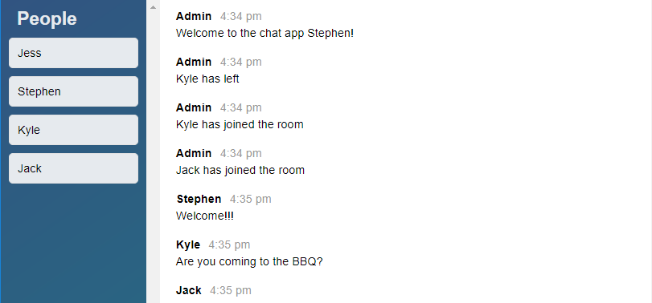

Stephen Akuffo
Software Developer & Datacenter Presales
I work as a Pre-sales Solution Specialist at Dell EMC. I have consulted with many small and medium size businesses to help them map IT infrastructure strategies and technology acquisition decisions.
I am certified on multiple Dell and VMware Technologies. I carries a VMware Certified Professional certification and am a vExpert 2016
I learnt to develop software to expand the kind of problems I can solve and to cultivate a bit of a creative edge. I hope to blend this knowledge of infrastructure and software development technologies in order to make cool things (that's a technical term), solve interesting problems and most importantly develop engineering as a discipline that can be mastered.
Code Snippets
Collatz Sequence
This ruby program will prompt the user for the end of a number range (1 to n)
and calculate which number within that range has the longest collatz sequence.
This solution utilizes basic caching to speed up the computation time.
As an example, finding the longest chain between 1 and 10000000 (10M) took 29~ seconds with caching and 92~ seconds without.
def collatz(ending_num)
longest_chain = 1
longest_starting = 1
cache = {1 => 1}
1.upto(ending_num) do |starting_num|
chain = collatz_calc(starting_num)
chain[:length] += cache[chain[:break_num]]
if chain[:length] > longest_chain
longest_chain = chain[:length]
longest_starting = starting_num
end
cache[starting_num] = chain[:length]
starting_num += 1
end
longest_collatz_seq = {
longest_num: longest_starting,
chain_length: longest_chain
}
return longest_collatz_seq
end
def collatz_calc(starting_num)
number = starting_num
collatz_length = 0
while (number != 1) && (number >= starting_num)
number = (number % 2 == 0) ? number/2 : (3 * number) + 1
collatz_length += 1
end
data = {
length: collatz_length,
break_num: number
}
return data
end
def df_traverse(node)
if @payload == node
return self
else
@children.each do |x|
checked = x.df_traverse node
return checked if checked != nil
end
end
return nil
end
Depth First Traversal
This method was part of a Tree Traversal challenge, in which the assignment was to build a Tree with the ability to traverse it with both Depth and Breath first traversal.
The depth first traversal was particularly interesting as it relies on recursion to progressively go down each branch, maintaining the 'world' of each function call on the call stack, and collapsing them when it gets to the bottom of a branch and does not find the required node (thus returning nil to each 'world') or when it does find it and bubbles the right node up to the original call
Join Function
This snippet is a simple re-implementation of
lodash.js' Join function using ES2015
"use strict";
var _ = {
join: (array, separator) => {
let done = "";
for (let strings of array) {
done += strings + separator
}
return done.substring(0, done.length - 1);;
}
}
const value = _.join(['hello', 'goodbye', 'bob', "karak"], '-');
console.log(value);
Web Apps
Please note: As these are hosted on Heroku-Free, please give the apps containers a few seconds to load up.
Kaa Chat
A Web Socket based Chat App

This app, using socket.io and Node.JS, allows users to easily
join a chat room and get cracking! Chill with friends and let them know
where you are with Kaa Chat!
App Page
Github Page
Nomster
A Yelp Clone

A Yelp clone that integrates with the Google Maps API
and includes features like user comments, star ratings,
image uploading, and user authentication.
App Page
Github Page
Grammable
A Test Driven Development built App

An Instagram clone that was built using industry-standard, test-driven
development following numerous red/green/refactor cycles.
App Page
Github Page
Todos
A Single Page Todo Application with AJAX

This single-page to-do application features a
fluid user interface that– by using JavaScript–
allows users to rapidly add dynamic content.
App Page
Github Page
Flixter
A Two-Sided Market Place

A two-sided, video-streaming marketplace platform that
features credit card payment capabilities, user role
management, complex user interfaces, and advanced
database relationships.
App Page
Github Page
Splurty
A Quote Generator

A database-powered quote generator with a mobile-first
design, using the Ruby on Rails framework, HTML, and CSS.
Uses Git and GitHub for version control, and launched
on Heroku.
App Page
Github Page
I have developed proficiency in
the follow programming languages and
comfort with the following tools.